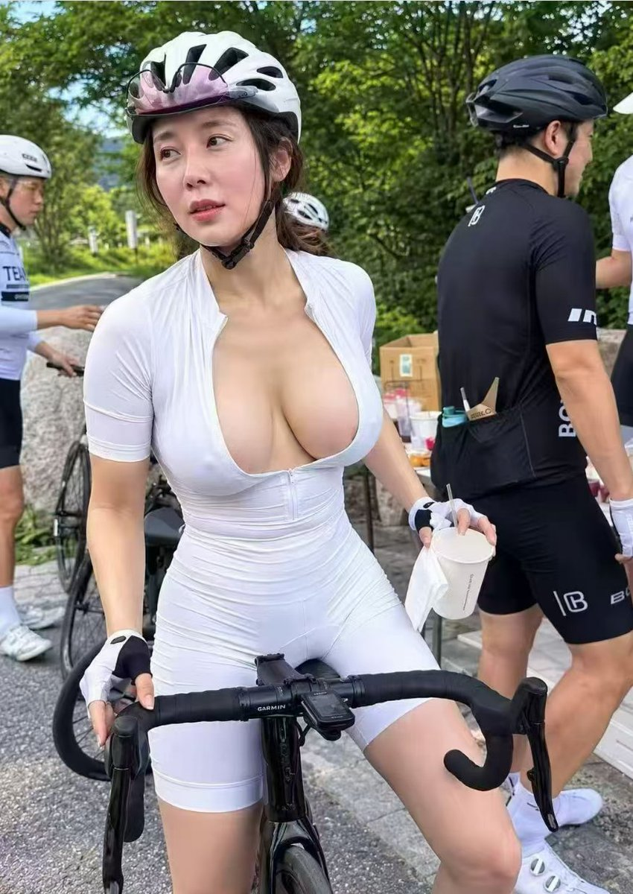
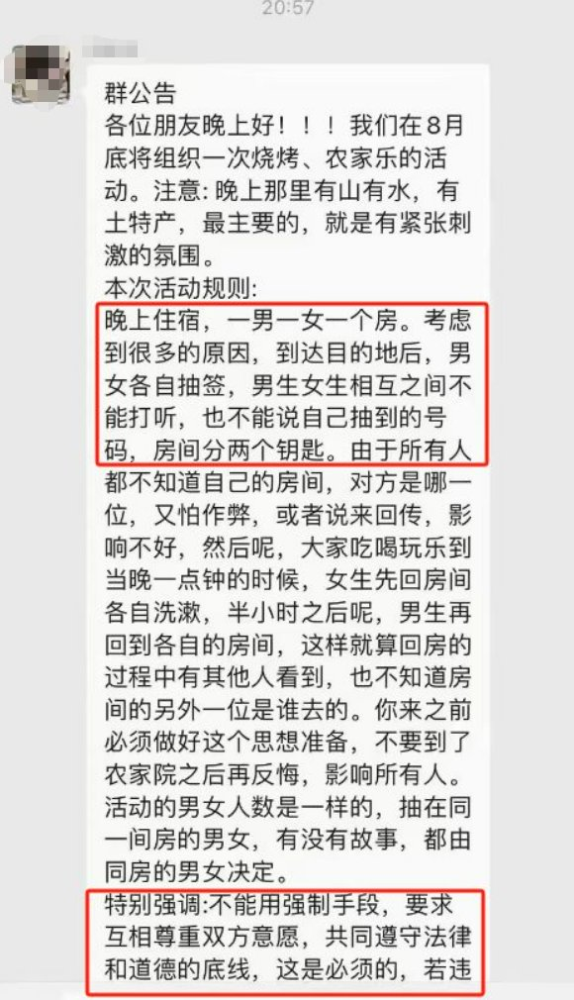
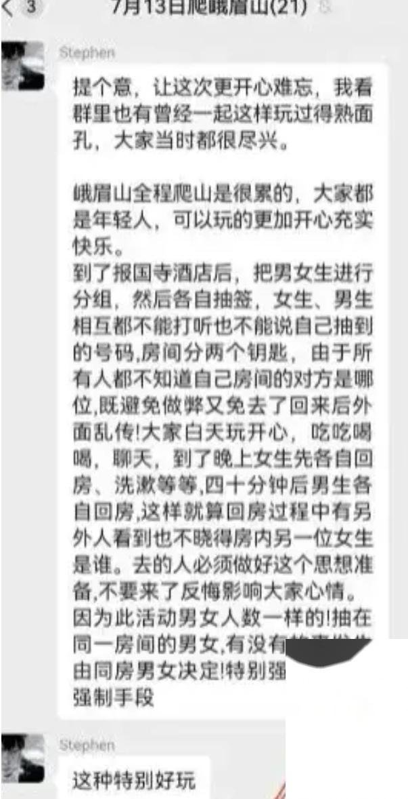

洛书瑶
@luoshuyao
@JMLLS888 骑行圈什么样我不知道，但是没东西发真没必要拿AI来讲故事吧。后面的截图那么糊，都不知道被传了几手了。



加密社 | 🪂
@JMLLS888
骑行圈到底乱不乱？
一名女子在社交媒体上曝光了骑行圈内的一些“肮脏内幕”，闻之瞬间令人大惊失色：还能这么玩？！！
博主加入了一个骑行圈，圈内在8月底将要举行一个骑友烧烤聚会，该名女子也参加了，不过随后她就后悔了！ https://t.co/07Q0AEMISi